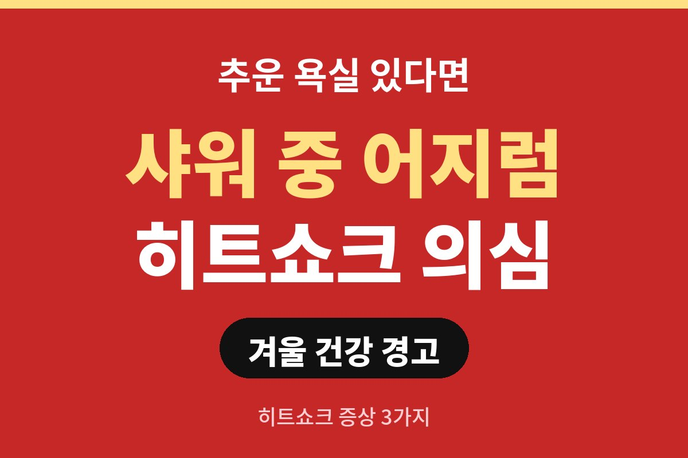
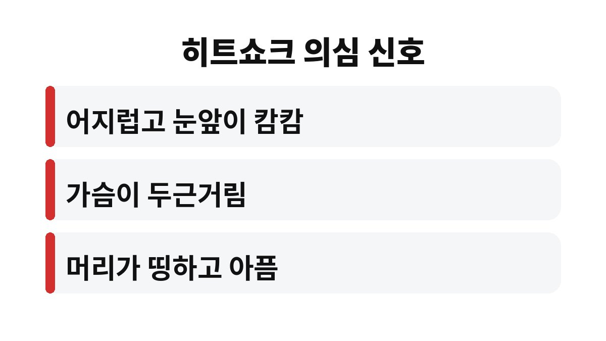
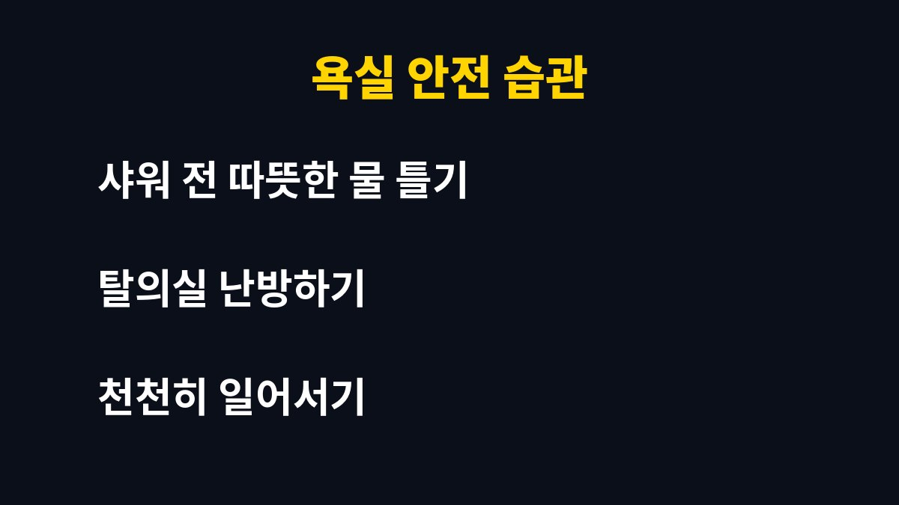

히트쇼크 증상은 어지러움, 두근거림, 두통 이 세 가지가 대표적입니다. 겨울에 추운 욕실에서 샤워하다 갑자기 핑 돌았던 적 있다면, 혹은 부모님이 욕실에 자주 들어가신다면 이 글을 끝까지 읽어 보세요. 왜 하필 따뜻한 물 앞에서 위험해지는 걸까요?
히트쇼크는 급격한 온도 변화 때문에 우리 몸이 놀라서 생기는 반응이에요. 추운 곳에서는 혈관이 수축해 혈압이 올라가고, 갑자기 따뜻한 곳으로 가면 혈관이 확 늘어나면서 혈압이 출렁입니다. 이 롤러코스터 같은 변화를 심장과 혈관이 따라가지 못하면 몸이 비명을 지르는 거죠.
대표적인 히트쇼크 증상은 어지러움, 가슴 두근거림, 머리가 띵한 두통입니다. 심하면 눈앞이 캄캄해지며 주저앉거나 의식이 흐려질 수 있어요. 욕실은 바닥이 미끄럽고 단단해서 넘어지면 큰 부상으로 이어지기 쉬워 더 조심해야 합니다.

집 안에서도 거실은 따뜻한데 욕실과 탈의실은 바깥 공기처럼 차가운 집이 많죠. 옷을 벗는 순간 찬 공기에 노출되고, 곧바로 뜨거운 물을 맞으면 몸은 짧은 시간에 극과 극을 오갑니다. 겨울 아침이나 늦은 밤처럼 실내가 가장 추운 시간대에는 부담이 더 커져요.
뜨거운 물에 오래 몸을 담그는 습관도 한몫합니다. 열탕에서 일어설 때 혈압이 뚝 떨어져 어지럼을 느끼는 분들이 꽤 많거든요. 몸이 따뜻해서 좋다고 느끼는 그 순간이, 혈관에게는 가장 바쁜 순간일 수 있다는 점을 기억해 주세요.
나이가 들수록 혈관의 탄력이 떨어지고 온도 변화에 몸이 적응하는 속도도 느려집니다. 고혈압이나 당뇨, 심장 질환으로 치료 중인 분이라면 혈압이 더 크게 흔들릴 수 있어요. 그래서 부모님 댁 욕실이 어떤 환경인지 한번 점검해 보시는 걸 권합니다.
가족이 샤워 중에 너무 조용하거나 오래 나오지 않는다면 가볍게 말을 걸어 보는 것도 좋은 습관이에요. 쓰러진 뒤 발견이 늦어지는 상황을 막는 가장 쉬운 방법이니까요.
첫째, 샤워 전에 뜨거운 물을 먼저 틀어 욕실 안을 데워 주세요. 김이 차오르면 온도 차이가 한결 줄어듭니다. 둘째, 탈의실이나 욕실에 작은 난방기구를 두는 것도 도움이 돼요. 셋째, 물 온도는 너무 뜨겁지 않게 하고, 욕조에서 일어날 때는 손잡이를 잡고 천천히 일어나세요.
어지럼은 탈수나 빈혈, 기립성 저혈압에서도 흔히 나타나서 구분이 쉽지 않아요. 다만 샤워나 입욕처럼 온도가 크게 바뀌는 순간 직후에 반복된다면 히트쇼크를 의심해 볼 만합니다. 한두 번이 아니라 자주 겪는다면 혈압을 한번 재 보시고, 병원에서 원인을 확인해 두는 것이 안전해요.
샤워 전에 물을 한 컵 마셔 두는 습관도 은근히 도움이 됩니다. 땀과 열 때문에 몸속 수분이 줄면 어지럼이 더 쉽게 오기 때문이에요. 특히 음주 직후나 배가 몹시 고플 때, 잠이 부족한 날의 뜨거운 샤워는 가급적 피하세요. 몸이 이미 지쳐 있을 때 온도 충격까지 더해지면 훨씬 버거워집니다.
겨울철에는 샤워 시간을 조금 줄이고, 마친 뒤에도 바로 찬 거실로 나가기보다 수건과 가운으로 몸을 감싸 체온을 천천히 맞춰 주세요. 이런 작은 습관만 지켜도 히트쇼크 걱정을 크게 덜 수 있습니다.
| 대표 증상 | 어지러움 · 두근거림 · 두통 |
| 위험한 상황 | 추운 탈의실에서 바로 뜨거운 물 |
| 핵심 예방 | 욕실 미리 데우기, 천천히 일어서기 |

만약 샤워 중 증상이 느껴지면 바로 물을 끄고 편한 자세로 앉아 쉬세요. 그래도 가슴이 조이거나 의식이 흐려지면 즉시 119에 연락해야 합니다. 평소 혈압이 높거나 심장이 불안한 분은 입욕 습관을 미리 의사와 상의해 두면 훨씬 안심이 돼요.
여러분 집 욕실은 따뜻한가요, 아니면 겨울만 되면 냉장고 같은가요? 부모님 댁에도 오늘 한번 전화해서 안부와 함께 물어봐 주세요. 도움이 되셨다면 구독하고 다음 건강 소식도 받아보세요!
본 글은 일반적인 건강 정보이며 개인 상태에 따라 다를 수 있으니, 증상이 있거나 지병이 있다면 반드시 전문의와 상담하세요.